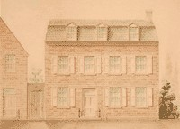

by
Stefan Bielinski
Matthew Visscher was born in December 1751. He was the first child born to the marriage of Albany contractor and landholder Bastian T. Visscher and his wife, Engeltie Vandenbergh Visscher. He grew up in the Pearl Street home that he would occupy after his father moved farther into the countryside.
In 1772, he married sloop captain's daughter Lydia Fryer. Their children were baptized in Albany churches during the 1770s and 80s. He was a member and pewholder at the Albany Dutch Reformed church.
Before the Revolution, he had become licensed to practice law. He came of age just in time to join the grassroots opposition to British restrictions headed by his mentor, attorney and former alderman Abraham Yates, Jr. He also joined the Albany Masonic lodge where he became acquainted with Albany newcomers who had more in common with the royal establishment.
But, instead, Matthew Visscher became a Revolutionary stalwart. In May 1775, he was appointed a lieutenant in the city militia regiment. Shortly thereafter, he was named secretary of the "Albany Committee of Correspondence, Safety, and Protection" and was one of its stalwart members throughout the war years. His daily diligence helped the committee bring the Revolution home and, in the process, made the young man one of the most important local operatives. He was a member of the Albany Commissioner for Detecting and Defeating Conspiracies throughout its lifetime. He also served as an Indian Commissioner - attending meetings on the frontier in the waning years of the war. In these capacities, he forged lasting relationships with Governor George Clinton and other members of his administration. In the years that followed, Visscher received a number of bounty rights for wartime service in the military and on the homefront.
In 1778, he was elected assistant alderman for the first ward. He served for more than a decade and was one of the most active members of the city council. In 1778, he was appointed Albany City and County clerk and served until 1790. In 1784, he was elected to the New York State Assembly and served two terms. He also sat on a number of local boards and on the State Board of Regents.
After living for a while in the first ward home of his father-in-law, by 1790, his family was established in their new, Georgian townhouse at what became 100 North Pearl Street. His service as clerk and secretary of many organizations make Visscher's signature among the most recognizable early Albany autographs.
Matthew Visscher died on August 8, 1793 at the age of forty-two. His estate passed probate in January 1794. His widow lived on in their "new" Pearl Street home until her death in 1841. A newspaper obituary testified to his exemplary service! Afterwards, his headstone was set at Albany Rural Cemetery.
notes
 Sources: The life of Matthew Visscher is CAP
biography number 4062. This profile is derived
chiefly from family and community-based
resources.
Sources: The life of Matthew Visscher is CAP
biography number 4062. This profile is derived
chiefly from family and community-based
resources.
Likeness of Matthew Visscher often reproduced and of
unknown origin. Copy in CAP Graphics Archive!
Obituary: "August 8, 1793: Matthew Visscher,
counselor at law, died aged 42. He was called into public life at an early
age, and took an active part in the revolution. He was clerk of the city
and county many years, and was highly respected for his fidelity and patriotism
in the public service," printed in Annals
of Albany, volume 3, p. 158. That November, a fire destroyed a
large part of the old city and was blamed on Visscher's servant Pomp.
first posted 10/15/03; last updated 2/14/16